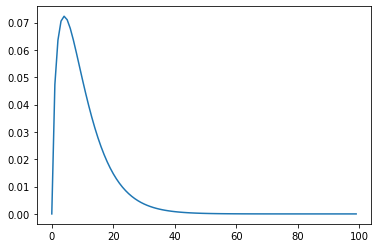

reset_seed()Implement Kalman model using FastAI
need to implement custom data preparation pipeline and loss function
hai_pathPath('/home/simone/Documents/uni/Thesis/GPFA_imputation/data/FLX_DE-Hai_FLUXNET2015_FULLSET_HH_2000-2012_1-4_float32.parquet')# hai = pd.read_parquet(hai_path)
hai = pd.read_parquet(hai_path64)
hai_era = pd.read_parquet(hai_era_path64)
# hai_era64 = pd.read_parquet(hai_era_path64)Data Preparation
The aim of the data preparation pipeline is to: - take the original time series and split it into time blocks - for each block generate a random gap (need to figure out the properties of the gap) - split some time blocks for testing
the input of the pipeline is: - a dataframe containing all observations
the input of the model is: - observed data (potentially containing NaN where data is missing) - missing data mask (which is telling where the data is missing) - the data needs to be standardized
Utils
Item
MeteoImpItem
MeteoImpItem (i:int, shift:int, var_sel:list[str], gap_len:int)
item = MeteoImpItem(2, 3, 'TA', 10)
itemMeteoImpItem(i=2, shift=3, var_sel=['TA'], gap_len=10)1) Block Index
the first step is to transfrom the original dataframe into blocks of a specified block_len
two different strategies are possible:
- contigous blocks
- random block in the dataframe
for now contigous blocks are used
MeteoImpIndex
MeteoImpIndex (index:pandas.core.indexes.datetimes.DatetimeIndex, var_sel:list[str], gap_len:int)
BlockIndexTransform
BlockIndexTransform (idx:pandas.core.indexes.datetimes.DatetimeIndex, block_len:int=200, offset=1)
divide timeseries DataFrame index into blocks
blk = BlockIndexTransform(hai.index, 10)blkBlockIndexTransform
(MeteoImpItem,object) -> encodes
blk(item)MeteoImpIndex(index=DatetimeIndex(['2000-01-01 12:30:00', '2000-01-01 13:00:00',
'2000-01-01 13:30:00', '2000-01-01 14:00:00',
'2000-01-01 14:30:00', '2000-01-01 15:00:00',
'2000-01-01 15:30:00', '2000-01-01 16:00:00',
'2000-01-01 16:30:00', '2000-01-01 17:00:00'],
dtype='datetime64[ns]', name='time', freq=None), var_sel=['TA'], gap_len=10)2) Meteo Imp Block DataFrames
Get a chunck out of dataframes given an index
DataControl
DataControl (data:pandas.core.frame.DataFrame, control:pandas.core.frame.DataFrame, var_sel:list[str], gap_len:int)
df = hai.loc[blk(item).index]Add lag
df.rename(columns=_rename_lag(1))| TA_lag_1 | SW_IN_lag_1 | VPD_lag_1 | |
|---|---|---|---|
| time | |||
| 2000-01-01 12:30:00 | 0.33 | 18.86 | 0.008 |
| 2000-01-01 13:00:00 | 0.41 | 21.10 | 0.006 |
| 2000-01-01 13:30:00 | 0.44 | 28.87 | 0.000 |
| 2000-01-01 14:00:00 | 0.48 | 24.22 | 0.000 |
| 2000-01-01 14:30:00 | 0.49 | 24.35 | 0.000 |
| 2000-01-01 15:00:00 | 0.51 | 15.68 | 0.000 |
| 2000-01-01 15:30:00 | 0.52 | 8.09 | 0.000 |
| 2000-01-01 16:00:00 | 0.57 | 6.37 | 0.000 |
| 2000-01-01 16:30:00 | 0.73 | 1.72 | 0.000 |
| 2000-01-01 17:00:00 | 0.77 | 0.06 | 0.000 |
_lag_df(df, 1)| TA_lag_1 | SW_IN_lag_1 | VPD_lag_1 | |
|---|---|---|---|
| time | |||
| 2000-01-01 12:30:00 | NaN | NaN | NaN |
| 2000-01-01 13:00:00 | 0.33 | 18.86 | 0.008 |
| 2000-01-01 13:30:00 | 0.41 | 21.10 | 0.006 |
| 2000-01-01 14:00:00 | 0.44 | 28.87 | 0.000 |
| 2000-01-01 14:30:00 | 0.48 | 24.22 | 0.000 |
| 2000-01-01 15:00:00 | 0.49 | 24.35 | 0.000 |
| 2000-01-01 15:30:00 | 0.51 | 15.68 | 0.000 |
| 2000-01-01 16:00:00 | 0.52 | 8.09 | 0.000 |
| 2000-01-01 16:30:00 | 0.57 | 6.37 | 0.000 |
| 2000-01-01 17:00:00 | 0.73 | 1.72 | 0.000 |
_add_lags_df(df, [1,2])| TA | SW_IN | VPD | TA_lag_1 | SW_IN_lag_1 | VPD_lag_1 | TA_lag_2 | SW_IN_lag_2 | VPD_lag_2 | |
|---|---|---|---|---|---|---|---|---|---|
| time | |||||||||
| 2000-01-01 12:30:00 | 0.33 | 18.86 | 0.008 | NaN | NaN | NaN | NaN | NaN | NaN |
| 2000-01-01 13:00:00 | 0.41 | 21.10 | 0.006 | 0.33 | 18.86 | 0.008 | NaN | NaN | NaN |
| 2000-01-01 13:30:00 | 0.44 | 28.87 | 0.000 | 0.41 | 21.10 | 0.006 | 0.33 | 18.86 | 0.008 |
| 2000-01-01 14:00:00 | 0.48 | 24.22 | 0.000 | 0.44 | 28.87 | 0.000 | 0.41 | 21.10 | 0.006 |
| 2000-01-01 14:30:00 | 0.49 | 24.35 | 0.000 | 0.48 | 24.22 | 0.000 | 0.44 | 28.87 | 0.000 |
| 2000-01-01 15:00:00 | 0.51 | 15.68 | 0.000 | 0.49 | 24.35 | 0.000 | 0.48 | 24.22 | 0.000 |
| 2000-01-01 15:30:00 | 0.52 | 8.09 | 0.000 | 0.51 | 15.68 | 0.000 | 0.49 | 24.35 | 0.000 |
| 2000-01-01 16:00:00 | 0.57 | 6.37 | 0.000 | 0.52 | 8.09 | 0.000 | 0.51 | 15.68 | 0.000 |
| 2000-01-01 16:30:00 | 0.73 | 1.72 | 0.000 | 0.57 | 6.37 | 0.000 | 0.52 | 8.09 | 0.000 |
| 2000-01-01 17:00:00 | 0.77 | 0.06 | 0.000 | 0.73 | 1.72 | 0.000 | 0.57 | 6.37 | 0.000 |
BlockDfTransform
BlockDfTransform (data:pandas.core.frame.DataFrame, control:pandas.core.frame.DataFrame, control_lags:Union[int,Iterable[int]])
divide timeseries DataFrame index into blocks
blkdf = BlockDfTransform(hai, hai_era, 1)blkdf(blk(item))Data Control (['TA'], 10)
data
| TA | SW_IN | VPD | |
|---|---|---|---|
| time | |||
| 2000-01-01 12:30:00 | 0.3300 | 18.8600 | 0.0080 |
| 2000-01-01 13:00:00 | 0.4100 | 21.1000 | 0.0060 |
| 2000-01-01 13:30:00 | 0.4400 | 28.8700 | 0.0000 |
| 2000-01-01 14:00:00 | 0.4800 | 24.2200 | 0.0000 |
| 2000-01-01 14:30:00 | 0.4900 | 24.3500 | 0.0000 |
| 2000-01-01 15:00:00 | 0.5100 | 15.6800 | 0.0000 |
| 2000-01-01 15:30:00 | 0.5200 | 8.0900 | 0.0000 |
| 2000-01-01 16:00:00 | 0.5700 | 6.3700 | 0.0000 |
| 2000-01-01 16:30:00 | 0.7300 | 1.7200 | 0.0000 |
| 2000-01-01 17:00:00 | 0.7700 | 0.0600 | 0.0000 |
control
| TA_ERA | SW_IN_ERA | VPD_ERA | TA_ERA_lag_1 | SW_IN_ERA_lag_1 | VPD_ERA_lag_1 | |
|---|---|---|---|---|---|---|
| time | ||||||
| 2000-01-01 12:30:00 | 1.1160 | 26.1870 | 0.5940 | 0.9950 | 25.5130 | 0.5920 |
| 2000-01-01 13:00:00 | 1.2370 | 25.9150 | 0.5960 | 1.1160 | 26.1870 | 0.5940 |
| 2000-01-01 13:30:00 | 1.3580 | 15.7740 | 0.5970 | 1.2370 | 25.9150 | 0.5960 |
| 2000-01-01 14:00:00 | 1.4090 | 14.4120 | 0.5830 | 1.3580 | 15.7740 | 0.5970 |
| 2000-01-01 14:30:00 | 1.4590 | 12.4860 | 0.5690 | 1.4090 | 14.4120 | 0.5830 |
| 2000-01-01 15:00:00 | 1.5100 | 10.0280 | 0.5550 | 1.4590 | 12.4860 | 0.5690 |
| 2000-01-01 15:30:00 | 1.5610 | 7.0820 | 0.5410 | 1.5100 | 10.0280 | 0.5550 |
| 2000-01-01 16:00:00 | 1.6110 | 3.6960 | 0.5270 | 1.5610 | 7.0820 | 0.5410 |
| 2000-01-01 16:30:00 | 1.6620 | 0.0000 | 0.5130 | 1.6110 | 3.6960 | 0.5270 |
| 2000-01-01 17:00:00 | 1.8450 | 0.0000 | 0.5130 | 1.6620 | 0.0000 | 0.5130 |
taking a day in the summer so there is an higher values for the variables
blkdf(blk(MeteoImpItem(800,0, 'TA', 10))).data| TA | SW_IN | VPD | |
|---|---|---|---|
| time | |||
| 2000-06-15 17:00:00 | 14.22 | 224.80 | 5.799 |
| 2000-06-15 17:30:00 | 14.11 | 195.28 | 6.577 |
| 2000-06-15 18:00:00 | 14.23 | 244.17 | 6.931 |
| 2000-06-15 18:30:00 | 14.40 | 253.92 | 7.286 |
| 2000-06-15 19:00:00 | 14.09 | 177.31 | 7.251 |
| 2000-06-15 19:30:00 | 13.71 | 97.07 | 6.683 |
| 2000-06-15 20:00:00 | 13.08 | 39.71 | 5.851 |
| 2000-06-15 20:30:00 | 12.41 | 10.65 | 5.254 |
| 2000-06-15 21:00:00 | 12.27 | 0.32 | 5.164 |
| 2000-06-15 21:30:00 | 12.20 | 0.00 | 5.037 |
tfms1 = TfmdLists([MeteoImpItem(800+i,0, 'TA', 10) for i in range(3)], [BlockIndexTransform(hai.index, 10), BlockDfTransform(hai, hai_era, control_lags=1)])tfms1[0]Data Control (['TA'], 10)
data
| TA | SW_IN | VPD | |
|---|---|---|---|
| time | |||
| 2000-06-15 17:00:00 | 14.2200 | 224.8000 | 5.7990 |
| 2000-06-15 17:30:00 | 14.1100 | 195.2800 | 6.5770 |
| 2000-06-15 18:00:00 | 14.2300 | 244.1700 | 6.9310 |
| 2000-06-15 18:30:00 | 14.4000 | 253.9200 | 7.2860 |
| 2000-06-15 19:00:00 | 14.0900 | 177.3100 | 7.2510 |
| 2000-06-15 19:30:00 | 13.7100 | 97.0700 | 6.6830 |
| 2000-06-15 20:00:00 | 13.0800 | 39.7100 | 5.8510 |
| 2000-06-15 20:30:00 | 12.4100 | 10.6500 | 5.2540 |
| 2000-06-15 21:00:00 | 12.2700 | 0.3200 | 5.1640 |
| 2000-06-15 21:30:00 | 12.2000 | 0.0000 | 5.0370 |
control
| TA_ERA | SW_IN_ERA | VPD_ERA | TA_ERA_lag_1 | SW_IN_ERA_lag_1 | VPD_ERA_lag_1 | |
|---|---|---|---|---|---|---|
| time | ||||||
| 2000-06-15 17:00:00 | 15.0500 | 255.1930 | 5.1020 | 15.1390 | 287.1000 | 4.9000 |
| 2000-06-15 17:30:00 | 14.9610 | 221.4270 | 5.3050 | 15.0500 | 255.1930 | 5.1020 |
| 2000-06-15 18:00:00 | 14.8720 | 186.3800 | 5.5070 | 14.9610 | 221.4270 | 5.3050 |
| 2000-06-15 18:30:00 | 14.7830 | 150.6500 | 5.7100 | 14.8720 | 186.3800 | 5.5070 |
| 2000-06-15 19:00:00 | 14.6940 | 114.8490 | 5.9120 | 14.7830 | 150.6500 | 5.7100 |
| 2000-06-15 19:30:00 | 14.6060 | 34.7280 | 6.1140 | 14.6940 | 114.8490 | 5.9120 |
| 2000-06-15 20:00:00 | 14.3800 | 19.8430 | 6.0740 | 14.6060 | 34.7280 | 6.1140 |
| 2000-06-15 20:30:00 | 14.1550 | 5.7120 | 6.0340 | 14.3800 | 19.8430 | 6.0740 |
| 2000-06-15 21:00:00 | 13.9290 | 0.0000 | 5.9940 | 14.1550 | 5.7120 | 6.0340 |
| 2000-06-15 21:30:00 | 13.7040 | 0.0000 | 5.9540 | 13.9290 | 0.0000 | 5.9940 |
3) Gaps
adds a mask which includes a random gap
Make random Gap
idx = L(*tfms1[0].data.columns).argwhere(lambda x: x in ['TA','SW_IN'])mask = np.ones_like(tfms1[0].data, dtype=bool)maskarray([[ True, True, True],
[ True, True, True],
[ True, True, True],
[ True, True, True],
[ True, True, True],
[ True, True, True],
[ True, True, True],
[ True, True, True],
[ True, True, True],
[ True, True, True]])def _make_random_gap(
gap_length: int, # The length of the gap
total_length: int, # The total number of observations
gap_start: int # Optional start of gap
)-> np.ndarray: # [total_length] array of bools to indicicate if the data is missing or not
"Add a continous gap of given length at random position"
if(gap_length >= total_length):
return np.repeat(True, total_length)
return np.hstack([
np.repeat(False, gap_start),
np.repeat(True, gap_length),
np.repeat(False, total_length - (gap_length + gap_start))
])gap = _make_random_gap(2, 10, 2)gaparray([False, False, True, True, False, False, False, False, False,
False])np.argwhere(gap)array([[2],
[3]])mask[np.argwhere(gap), idx] = Falsemaskarray([[ True, True, True],
[ True, True, True],
[False, False, True],
[False, False, True],
[ True, True, True],
[ True, True, True],
[ True, True, True],
[ True, True, True],
[ True, True, True],
[ True, True, True]])mask[gap]array([[False, False, True],
[False, False, True]])Add Gap Transform
MeteoImpDf
MeteoImpDf (data:pandas.core.frame.DataFrame, mask:pandas.core.frame.DataFrame, control:pandas.core.frame.DataFrame)
AddGapTransform
AddGapTransform ()
Adds a random gap to a dataframe
a_gap = AddGapTransform(1)
a_gapAddGapTransform
(DataControl,object) -> encodes
a_gap(tfms1[0])Meteo Imp Df
data
| TA | SW_IN | VPD | |
|---|---|---|---|
| time | |||
| 2000-06-15 17:00:00 | 14.2200 | 224.8000 | 5.7990 |
| 2000-06-15 17:30:00 | 14.1100 | 195.2800 | 6.5770 |
| 2000-06-15 18:00:00 | 14.2300 | 244.1700 | 6.9310 |
| 2000-06-15 18:30:00 | 14.4000 | 253.9200 | 7.2860 |
| 2000-06-15 19:00:00 | 14.0900 | 177.3100 | 7.2510 |
| 2000-06-15 19:30:00 | 13.7100 | 97.0700 | 6.6830 |
| 2000-06-15 20:00:00 | 13.0800 | 39.7100 | 5.8510 |
| 2000-06-15 20:30:00 | 12.4100 | 10.6500 | 5.2540 |
| 2000-06-15 21:00:00 | 12.2700 | 0.3200 | 5.1640 |
| 2000-06-15 21:30:00 | 12.2000 | 0.0000 | 5.0370 |
mask
| TA | SW_IN | VPD | |
|---|---|---|---|
| time | |||
| 2000-06-15 17:00:00 | False | True | True |
| 2000-06-15 17:30:00 | False | True | True |
| 2000-06-15 18:00:00 | False | True | True |
| 2000-06-15 18:30:00 | False | True | True |
| 2000-06-15 19:00:00 | False | True | True |
| 2000-06-15 19:30:00 | False | True | True |
| 2000-06-15 20:00:00 | False | True | True |
| 2000-06-15 20:30:00 | False | True | True |
| 2000-06-15 21:00:00 | False | True | True |
| 2000-06-15 21:30:00 | False | True | True |
control
| TA_ERA | SW_IN_ERA | VPD_ERA | TA_ERA_lag_1 | SW_IN_ERA_lag_1 | VPD_ERA_lag_1 | |
|---|---|---|---|---|---|---|
| time | ||||||
| 2000-06-15 17:00:00 | 15.0500 | 255.1930 | 5.1020 | 15.1390 | 287.1000 | 4.9000 |
| 2000-06-15 17:30:00 | 14.9610 | 221.4270 | 5.3050 | 15.0500 | 255.1930 | 5.1020 |
| 2000-06-15 18:00:00 | 14.8720 | 186.3800 | 5.5070 | 14.9610 | 221.4270 | 5.3050 |
| 2000-06-15 18:30:00 | 14.7830 | 150.6500 | 5.7100 | 14.8720 | 186.3800 | 5.5070 |
| 2000-06-15 19:00:00 | 14.6940 | 114.8490 | 5.9120 | 14.7830 | 150.6500 | 5.7100 |
| 2000-06-15 19:30:00 | 14.6060 | 34.7280 | 6.1140 | 14.6940 | 114.8490 | 5.9120 |
| 2000-06-15 20:00:00 | 14.3800 | 19.8430 | 6.0740 | 14.6060 | 34.7280 | 6.1140 |
| 2000-06-15 20:30:00 | 14.1550 | 5.7120 | 6.0340 | 14.3800 | 19.8430 | 6.0740 |
| 2000-06-15 21:00:00 | 13.9290 | 0.0000 | 5.9940 | 14.1550 | 5.7120 | 6.0340 |
| 2000-06-15 21:30:00 | 13.7040 | 0.0000 | 5.9540 | 13.9290 | 0.0000 | 5.9940 |
tfms2 = TfmdLists(tfms1.items, [*tfms1.fs, AddGapTransform(5)])Tidy
m_df = a_gap(tfms1[0])MeteoImpDf.tidy
MeteoImpDf.tidy (control_map:Optional[dict[str,str]]=None)
| Type | Default | Details | |
|---|---|---|---|
| control_map | Optional | None | mapping from control var names to obs names |
m_df.tidy()| time | variable | value | is_present | |
|---|---|---|---|---|
| 0 | 2000-06-15 17:00:00 | TA | 14.220 | False |
| 1 | 2000-06-15 17:30:00 | TA | 14.110 | False |
| 2 | 2000-06-15 18:00:00 | TA | 14.230 | False |
| 3 | 2000-06-15 18:30:00 | TA | 14.400 | False |
| 4 | 2000-06-15 19:00:00 | TA | 14.090 | False |
| 5 | 2000-06-15 19:30:00 | TA | 13.710 | False |
| 6 | 2000-06-15 20:00:00 | TA | 13.080 | False |
| 7 | 2000-06-15 20:30:00 | TA | 12.410 | False |
| 8 | 2000-06-15 21:00:00 | TA | 12.270 | False |
| 9 | 2000-06-15 21:30:00 | TA | 12.200 | False |
| 10 | 2000-06-15 17:00:00 | SW_IN | 224.800 | True |
| 11 | 2000-06-15 17:30:00 | SW_IN | 195.280 | True |
| 12 | 2000-06-15 18:00:00 | SW_IN | 244.170 | True |
| 13 | 2000-06-15 18:30:00 | SW_IN | 253.920 | True |
| 14 | 2000-06-15 19:00:00 | SW_IN | 177.310 | True |
| 15 | 2000-06-15 19:30:00 | SW_IN | 97.070 | True |
| 16 | 2000-06-15 20:00:00 | SW_IN | 39.710 | True |
| 17 | 2000-06-15 20:30:00 | SW_IN | 10.650 | True |
| 18 | 2000-06-15 21:00:00 | SW_IN | 0.320 | True |
| 19 | 2000-06-15 21:30:00 | SW_IN | 0.000 | True |
| 20 | 2000-06-15 17:00:00 | VPD | 5.799 | True |
| 21 | 2000-06-15 17:30:00 | VPD | 6.577 | True |
| 22 | 2000-06-15 18:00:00 | VPD | 6.931 | True |
| 23 | 2000-06-15 18:30:00 | VPD | 7.286 | True |
| 24 | 2000-06-15 19:00:00 | VPD | 7.251 | True |
| 25 | 2000-06-15 19:30:00 | VPD | 6.683 | True |
| 26 | 2000-06-15 20:00:00 | VPD | 5.851 | True |
| 27 | 2000-06-15 20:30:00 | VPD | 5.254 | True |
| 28 | 2000-06-15 21:00:00 | VPD | 5.164 | True |
| 29 | 2000-06-15 21:30:00 | VPD | 5.037 | True |
m_df.tidy(control_map={'TA_ERA': 'TA'})| time | variable | value | control | is_present | |
|---|---|---|---|---|---|
| 0 | 2000-06-15 17:00:00 | TA | 14.220 | 15.050 | False |
| 1 | 2000-06-15 17:30:00 | TA | 14.110 | 14.961 | False |
| 2 | 2000-06-15 18:00:00 | TA | 14.230 | 14.872 | False |
| 3 | 2000-06-15 18:30:00 | TA | 14.400 | 14.783 | False |
| 4 | 2000-06-15 19:00:00 | TA | 14.090 | 14.694 | False |
| 5 | 2000-06-15 19:30:00 | TA | 13.710 | 14.606 | False |
| 6 | 2000-06-15 20:00:00 | TA | 13.080 | 14.380 | False |
| 7 | 2000-06-15 20:30:00 | TA | 12.410 | 14.155 | False |
| 8 | 2000-06-15 21:00:00 | TA | 12.270 | 13.929 | False |
| 9 | 2000-06-15 21:30:00 | TA | 12.200 | 13.704 | False |
| 10 | 2000-06-15 17:00:00 | SW_IN | 224.800 | NaN | True |
| 11 | 2000-06-15 17:30:00 | SW_IN | 195.280 | NaN | True |
| 12 | 2000-06-15 18:00:00 | SW_IN | 244.170 | NaN | True |
| 13 | 2000-06-15 18:30:00 | SW_IN | 253.920 | NaN | True |
| 14 | 2000-06-15 19:00:00 | SW_IN | 177.310 | NaN | True |
| 15 | 2000-06-15 19:30:00 | SW_IN | 97.070 | NaN | True |
| 16 | 2000-06-15 20:00:00 | SW_IN | 39.710 | NaN | True |
| 17 | 2000-06-15 20:30:00 | SW_IN | 10.650 | NaN | True |
| 18 | 2000-06-15 21:00:00 | SW_IN | 0.320 | NaN | True |
| 19 | 2000-06-15 21:30:00 | SW_IN | 0.000 | NaN | True |
| 20 | 2000-06-15 17:00:00 | VPD | 5.799 | NaN | True |
| 21 | 2000-06-15 17:30:00 | VPD | 6.577 | NaN | True |
| 22 | 2000-06-15 18:00:00 | VPD | 6.931 | NaN | True |
| 23 | 2000-06-15 18:30:00 | VPD | 7.286 | NaN | True |
| 24 | 2000-06-15 19:00:00 | VPD | 7.251 | NaN | True |
| 25 | 2000-06-15 19:30:00 | VPD | 6.683 | NaN | True |
| 26 | 2000-06-15 20:00:00 | VPD | 5.851 | NaN | True |
| 27 | 2000-06-15 20:30:00 | VPD | 5.254 | NaN | True |
| 28 | 2000-06-15 21:00:00 | VPD | 5.164 | NaN | True |
| 29 | 2000-06-15 21:30:00 | VPD | 5.037 | NaN | True |
m_df.tidy(control_map=hai_control).head()| time | variable | value | control | is_present | |
|---|---|---|---|---|---|
| 0 | 2000-06-15 17:00:00 | TA | 14.22 | 15.050 | False |
| 1 | 2000-06-15 17:30:00 | TA | 14.11 | 14.961 | False |
| 2 | 2000-06-15 18:00:00 | TA | 14.23 | 14.872 | False |
| 3 | 2000-06-15 18:30:00 | TA | 14.40 | 14.783 | False |
| 4 | 2000-06-15 19:00:00 | TA | 14.09 | 14.694 | False |
Plotting
Rug
plot_rug(m_df.tidy())df = m_df.tidy()df = df[df.variable=="TA"].copy()df['row_number'] = df.reset_index().indexdf| time | variable | value | is_present | row_number | |
|---|---|---|---|---|---|
| 0 | 2000-06-15 17:00:00 | TA | 14.22 | False | 0 |
| 1 | 2000-06-15 17:30:00 | TA | 14.11 | False | 1 |
| 2 | 2000-06-15 18:00:00 | TA | 14.23 | False | 2 |
| 3 | 2000-06-15 18:30:00 | TA | 14.40 | False | 3 |
| 4 | 2000-06-15 19:00:00 | TA | 14.09 | False | 4 |
| 5 | 2000-06-15 19:30:00 | TA | 13.71 | False | 5 |
| 6 | 2000-06-15 20:00:00 | TA | 13.08 | False | 6 |
| 7 | 2000-06-15 20:30:00 | TA | 12.41 | False | 7 |
| 8 | 2000-06-15 21:00:00 | TA | 12.27 | False | 8 |
| 9 | 2000-06-15 21:30:00 | TA | 12.20 | False | 9 |
df.iloc[1]time 2000-06-15 17:30:00
variable TA
value 14.11
is_present False
row_number 1
Name: 1, dtype: objectdf.loc[2, "is_present"] = Truedf| time | variable | value | is_present | row_number | |
|---|---|---|---|---|---|
| 0 | 2000-06-15 17:00:00 | TA | 14.22 | False | 0 |
| 1 | 2000-06-15 17:30:00 | TA | 14.11 | False | 1 |
| 2 | 2000-06-15 18:00:00 | TA | 14.23 | True | 2 |
| 3 | 2000-06-15 18:30:00 | TA | 14.40 | False | 3 |
| 4 | 2000-06-15 19:00:00 | TA | 14.09 | False | 4 |
| 5 | 2000-06-15 19:30:00 | TA | 13.71 | False | 5 |
| 6 | 2000-06-15 20:00:00 | TA | 13.08 | False | 6 |
| 7 | 2000-06-15 20:30:00 | TA | 12.41 | False | 7 |
| 8 | 2000-06-15 21:00:00 | TA | 12.27 | False | 8 |
| 9 | 2000-06-15 21:30:00 | TA | 12.20 | False | 9 |
i = 1
prev, curr, _next= df.iloc[i-1], df.iloc[i], df.iloc[i+1]prev, curr, _next(time 2000-06-15 17:00:00
variable TA
value 14.22
is_present False
row_number 0
Name: 0, dtype: object,
time 2000-06-15 17:30:00
variable TA
value 14.11
is_present False
row_number 1
Name: 1, dtype: object,
time 2000-06-15 18:00:00
variable TA
value 14.23
is_present True
row_number 2
Name: 2, dtype: object)df| time | variable | value | is_present | row_number | |
|---|---|---|---|---|---|
| 0 | 2000-06-15 17:00:00 | TA | 14.22 | False | 0 |
| 1 | 2000-06-15 17:30:00 | TA | 14.11 | False | 1 |
| 2 | 2000-06-15 18:00:00 | TA | 14.23 | True | 2 |
| 3 | 2000-06-15 18:30:00 | TA | 14.40 | False | 3 |
| 4 | 2000-06-15 19:00:00 | TA | 14.09 | False | 4 |
| 5 | 2000-06-15 19:30:00 | TA | 13.71 | False | 5 |
| 6 | 2000-06-15 20:00:00 | TA | 13.08 | False | 6 |
| 7 | 2000-06-15 20:30:00 | TA | 12.41 | False | 7 |
| 8 | 2000-06-15 21:00:00 | TA | 12.27 | False | 8 |
| 9 | 2000-06-15 21:30:00 | TA | 12.20 | False | 9 |
Missing Area
for i in range(len(df)):
# handle boundaries
prev = df.iloc[i-1].is_present if i>0 else True
_next = df.iloc[i+1].is_present if i<(len(df)-1) else True
curr = df.iloc[i]
if not curr.is_present and prev:
print("gap start", curr.time)
if not curr.is_present and _next:
print("gap end", curr.time)gap start 2000-06-15 17:00:00
gap end 2000-06-15 17:30:00
gap start 2000-06-15 18:30:00
gap end 2000-06-15 21:30:00find_gap_limits
find_gap_limits (df)
find_gap_limits(df)| gap_start | gap_end | |
|---|---|---|
| 0 | 2000-06-15 17:00:00 | 2000-06-15 17:30:00 |
| 1 | 2000-06-15 18:30:00 | 2000-06-15 21:30:00 |
plot_missing_area
plot_missing_area (df, sel=Parameter('param_2', SelectionParameter({ bind: 'scales', name: 'param_2', select: IntervalSelectionConfig({ type: 'interval' }) })), props={})
plot_missing_area(df)Points
plot_points
plot_points (df, y='value', y_label='', sel=Parameter('param_3', SelectionParameter({ bind: 'scales', name: 'param_3', select: IntervalSelectionConfig({ type: 'interval' }) })), props={})
plot_points(m_df.tidy())Line
plot_line(m_df.tidy())Control
plot_control(m_df.tidy(), y="value")Errorband
plot_error(m_df.tidy().assign(std=5))Variable
plot_variable
plot_variable (df, variable, ys=['value', 'value', 'control'], title='', y_label='', sel=None, error=False, point=True, gap_area=True, control=False, props={})
plot_variable(m_df.tidy(), "TA", title="title TA", gap_area=False)plot_variable(m_df.tidy(control_map=hai_control), "TA", title="title TA", control=True)plot_variable(m_df.tidy().assign(std=.5), "TA", title="title TA", error=True)plot_variable(m_df.tidy().assign(std=.5), "TA", title="title TA", error=True, point=False, gap_area=False)Facet
facet_variable
facet_variable (df, n_cols:int=3, bind_interaction:bool=True, units=None, ys=['value', 'value', 'control'], title='', sel=None, error=False, point=True, gap_area=True, control=False, props={})
Plot all values of the column variable in different subplots
| Type | Default | Details | |
|---|---|---|---|
| df | tidy dataframe | ||
| n_cols | int | 3 | |
| bind_interaction | bool | True | Whether the sub-plots for each variable should be connected for zooming/panning |
| units | NoneType | None | |
| ys | list | [‘value’, ‘value’, ‘control’] | |
| title | str | ||
| sel | NoneType | None | |
| error | bool | False | |
| point | bool | True | |
| gap_area | bool | True | |
| control | bool | False | |
| props | dict | {} | |
| Returns | Chart |
Show
MeteoImpDf.show
MeteoImpDf.show (ax=None, ctx=None, n_cols:int=3, bind_interaction:bool=True, props:dict=None)
| Type | Default | Details | |
|---|---|---|---|
| ax | NoneType | None | |
| ctx | NoneType | None | |
| n_cols | int | 3 | |
| bind_interaction | bool | True | Whether the sub-plots for each variable should be connected for zooming/panning |
| props | dict | None | additional properties (eg. size) for altair plot |
| Returns | Chart |
m_df.show(bind_interaction = False)tfms2[0].show()tfms2[2].show()4) To Tensor
this needs to handle both the init with a list of items and when the first item is a sequence of list of items
MeteoImpTensor
MeteoImpTensor (*args)
All the operations on a read-only sequence.
Concrete subclasses must override new or init, getitem, and len.
MeteoImpDf2Tensor
MeteoImpDf2Tensor (enc=None, dec=None, split_idx=None, order=None)
Delegates (__call__,decode,setup) to (encodes,decodes,setups) if split_idx matches
to_t = MeteoImpDf2Tensor()to_t.setup(tfms2)to_t(tfms2[0])data
tensor([[ 14.2200, 224.8000, 5.7990],
[ 14.1100, 195.2800, 6.5770],
[ 14.2300, 244.1700, 6.9310],
[ 14.4000, 253.9200, 7.2860],
[ 14.0900, 177.3100, 7.2510],
[ 13.7100, 97.0700, 6.6830],
[ 13.0800, 39.7100, 5.8510],
[ 12.4100, 10.6500, 5.2540],
[ 12.2700, 0.3200, 5.1640],
[ 12.2000, 0.0000, 5.0370]], dtype=torch.float64)
mask
tensor([[False, True, True],
[False, True, True],
[False, True, True],
[False, True, True],
[False, True, True],
[False, True, True],
[False, True, True],
[False, True, True],
[False, True, True],
[False, True, True]])
control
tensor([[ 15.0500, 255.1930, 5.1020, 15.1390, 287.1000, 4.9000],
[ 14.9610, 221.4270, 5.3050, 15.0500, 255.1930, 5.1020],
[ 14.8720, 186.3800, 5.5070, 14.9610, 221.4270, 5.3050],
[ 14.7830, 150.6500, 5.7100, 14.8720, 186.3800, 5.5070],
[ 14.6940, 114.8490, 5.9120, 14.7830, 150.6500, 5.7100],
[ 14.6060, 34.7280, 6.1140, 14.6940, 114.8490, 5.9120],
[ 14.3800, 19.8430, 6.0740, 14.6060, 34.7280, 6.1140],
[ 14.1550, 5.7120, 6.0340, 14.3800, 19.8430, 6.0740],
[ 13.9290, 0.0000, 5.9940, 14.1550, 5.7120, 6.0340],
[ 13.7040, 0.0000, 5.9540, 13.9290, 0.0000, 5.9940]],
dtype=torch.float64)
to_t.decode(to_t(tfms2[0]));tfms2[0]Meteo Imp Df
data
| TA | SW_IN | VPD | |
|---|---|---|---|
| time | |||
| 2000-06-15 17:00:00 | 14.2200 | 224.8000 | 5.7990 |
| 2000-06-15 17:30:00 | 14.1100 | 195.2800 | 6.5770 |
| 2000-06-15 18:00:00 | 14.2300 | 244.1700 | 6.9310 |
| 2000-06-15 18:30:00 | 14.4000 | 253.9200 | 7.2860 |
| 2000-06-15 19:00:00 | 14.0900 | 177.3100 | 7.2510 |
| 2000-06-15 19:30:00 | 13.7100 | 97.0700 | 6.6830 |
| 2000-06-15 20:00:00 | 13.0800 | 39.7100 | 5.8510 |
| 2000-06-15 20:30:00 | 12.4100 | 10.6500 | 5.2540 |
| 2000-06-15 21:00:00 | 12.2700 | 0.3200 | 5.1640 |
| 2000-06-15 21:30:00 | 12.2000 | 0.0000 | 5.0370 |
mask
| TA | SW_IN | VPD | |
|---|---|---|---|
| time | |||
| 2000-06-15 17:00:00 | False | True | True |
| 2000-06-15 17:30:00 | False | True | True |
| 2000-06-15 18:00:00 | False | True | True |
| 2000-06-15 18:30:00 | False | True | True |
| 2000-06-15 19:00:00 | False | True | True |
| 2000-06-15 19:30:00 | False | True | True |
| 2000-06-15 20:00:00 | False | True | True |
| 2000-06-15 20:30:00 | False | True | True |
| 2000-06-15 21:00:00 | False | True | True |
| 2000-06-15 21:30:00 | False | True | True |
control
| TA_ERA | SW_IN_ERA | VPD_ERA | TA_ERA_lag_1 | SW_IN_ERA_lag_1 | VPD_ERA_lag_1 | |
|---|---|---|---|---|---|---|
| time | ||||||
| 2000-06-15 17:00:00 | 15.0500 | 255.1930 | 5.1020 | 15.1390 | 287.1000 | 4.9000 |
| 2000-06-15 17:30:00 | 14.9610 | 221.4270 | 5.3050 | 15.0500 | 255.1930 | 5.1020 |
| 2000-06-15 18:00:00 | 14.8720 | 186.3800 | 5.5070 | 14.9610 | 221.4270 | 5.3050 |
| 2000-06-15 18:30:00 | 14.7830 | 150.6500 | 5.7100 | 14.8720 | 186.3800 | 5.5070 |
| 2000-06-15 19:00:00 | 14.6940 | 114.8490 | 5.9120 | 14.7830 | 150.6500 | 5.7100 |
| 2000-06-15 19:30:00 | 14.6060 | 34.7280 | 6.1140 | 14.6940 | 114.8490 | 5.9120 |
| 2000-06-15 20:00:00 | 14.3800 | 19.8430 | 6.0740 | 14.6060 | 34.7280 | 6.1140 |
| 2000-06-15 20:30:00 | 14.1550 | 5.7120 | 6.0340 | 14.3800 | 19.8430 | 6.0740 |
| 2000-06-15 21:00:00 | 13.9290 | 0.0000 | 5.9940 | 14.1550 | 5.7120 | 6.0340 |
| 2000-06-15 21:30:00 | 13.7040 | 0.0000 | 5.9540 | 13.9290 | 0.0000 | 5.9940 |
tfms3 = TfmdLists(tfms1.items, [*tfms2.fs, MeteoImpDf2Tensor()])tfms3[0]data
tensor([[ 14.2200, 224.8000, 5.7990],
[ 14.1100, 195.2800, 6.5770],
[ 14.2300, 244.1700, 6.9310],
[ 14.4000, 253.9200, 7.2860],
[ 14.0900, 177.3100, 7.2510],
[ 13.7100, 97.0700, 6.6830],
[ 13.0800, 39.7100, 5.8510],
[ 12.4100, 10.6500, 5.2540],
[ 12.2700, 0.3200, 5.1640],
[ 12.2000, 0.0000, 5.0370]], dtype=torch.float64)
mask
tensor([[False, True, True],
[False, True, True],
[False, True, True],
[False, True, True],
[False, True, True],
[False, True, True],
[False, True, True],
[False, True, True],
[False, True, True],
[False, True, True]])
control
tensor([[ 15.0500, 255.1930, 5.1020, 15.1390, 287.1000, 4.9000],
[ 14.9610, 221.4270, 5.3050, 15.0500, 255.1930, 5.1020],
[ 14.8720, 186.3800, 5.5070, 14.9610, 221.4270, 5.3050],
[ 14.7830, 150.6500, 5.7100, 14.8720, 186.3800, 5.5070],
[ 14.6940, 114.8490, 5.9120, 14.7830, 150.6500, 5.7100],
[ 14.6060, 34.7280, 6.1140, 14.6940, 114.8490, 5.9120],
[ 14.3800, 19.8430, 6.0740, 14.6060, 34.7280, 6.1140],
[ 14.1550, 5.7120, 6.0340, 14.3800, 19.8430, 6.0740],
[ 13.9290, 0.0000, 5.9940, 14.1550, 5.7120, 6.0340],
[ 13.7040, 0.0000, 5.9540, 13.9290, 0.0000, 5.9940]],
dtype=torch.float64)
type(tfms3[0])__main__.MeteoImpTensor5) Normalize
get_stats
get_stats (df, repeat=1, device='cpu')
MeteoImpNormalize
MeteoImpNormalize (mean_data, std_data, mean_control, std_control)
Normalize/denorm MeteoImpTensor column-wise
norm = MeteoImpNormalize(*get_stats(hai), *get_stats(hai_era,2))tfms3[0]data
tensor([[ 14.2200, 224.8000, 5.7990],
[ 14.1100, 195.2800, 6.5770],
[ 14.2300, 244.1700, 6.9310],
[ 14.4000, 253.9200, 7.2860],
[ 14.0900, 177.3100, 7.2510],
[ 13.7100, 97.0700, 6.6830],
[ 13.0800, 39.7100, 5.8510],
[ 12.4100, 10.6500, 5.2540],
[ 12.2700, 0.3200, 5.1640],
[ 12.2000, 0.0000, 5.0370]], dtype=torch.float64)
mask
tensor([[False, True, True],
[False, True, True],
[False, True, True],
[False, True, True],
[False, True, True],
[False, True, True],
[False, True, True],
[False, True, True],
[False, True, True],
[False, True, True]])
control
tensor([[ 15.0500, 255.1930, 5.1020, 15.1390, 287.1000, 4.9000],
[ 14.9610, 221.4270, 5.3050, 15.0500, 255.1930, 5.1020],
[ 14.8720, 186.3800, 5.5070, 14.9610, 221.4270, 5.3050],
[ 14.7830, 150.6500, 5.7100, 14.8720, 186.3800, 5.5070],
[ 14.6940, 114.8490, 5.9120, 14.7830, 150.6500, 5.7100],
[ 14.6060, 34.7280, 6.1140, 14.6940, 114.8490, 5.9120],
[ 14.3800, 19.8430, 6.0740, 14.6060, 34.7280, 6.1140],
[ 14.1550, 5.7120, 6.0340, 14.3800, 19.8430, 6.0740],
[ 13.9290, 0.0000, 5.9940, 14.1550, 5.7120, 6.0340],
[ 13.7040, 0.0000, 5.9540, 13.9290, 0.0000, 5.9940]],
dtype=torch.float64)
normMeteoImpNormalize -- {'mean_data': tensor([ 8.3339, 120.9578, 3.3807], dtype=torch.float64), 'std_data': tensor([ 7.9246, 204.0026, 4.3684], dtype=torch.float64), 'mean_control': tensor([ 8.1948, 120.6864, 3.3253, 8.1948, 120.6864, 3.3253], dtype=torch.float64), 'std_control': tensor([ 7.5459, 187.1730, 3.6871, 7.5459, 187.1730, 3.6871], dtype=torch.float64)}
(MeteoImpTensor,object) -> encodes
(MeteoImpTensor,object) -> decodes
norm(tfms3[0])data
tensor([[ 0.7428, 0.5090, 0.5536],
[ 0.7289, 0.3643, 0.7317],
[ 0.7440, 0.6040, 0.8127],
[ 0.7655, 0.6518, 0.8940],
[ 0.7264, 0.2762, 0.8860],
[ 0.6784, -0.1171, 0.7560],
[ 0.5989, -0.3983, 0.5655],
[ 0.5144, -0.5407, 0.4288],
[ 0.4967, -0.5914, 0.4082],
[ 0.4879, -0.5929, 0.3792]], dtype=torch.float64)
mask
tensor([[False, True, True],
[False, True, True],
[False, True, True],
[False, True, True],
[False, True, True],
[False, True, True],
[False, True, True],
[False, True, True],
[False, True, True],
[False, True, True]])
control
tensor([[ 0.9085, 0.7186, 0.4819, 0.9203, 0.8891, 0.4271],
[ 0.8967, 0.5382, 0.5369, 0.9085, 0.7186, 0.4819],
[ 0.8849, 0.3510, 0.5917, 0.8967, 0.5382, 0.5369],
[ 0.8731, 0.1601, 0.6468, 0.8849, 0.3510, 0.5917],
[ 0.8613, -0.0312, 0.7015, 0.8731, 0.1601, 0.6468],
[ 0.8496, -0.4592, 0.7563, 0.8613, -0.0312, 0.7015],
[ 0.8197, -0.5388, 0.7455, 0.8496, -0.4592, 0.7563],
[ 0.7899, -0.6143, 0.7346, 0.8197, -0.5388, 0.7455],
[ 0.7599, -0.6448, 0.7238, 0.7899, -0.6143, 0.7346],
[ 0.7301, -0.6448, 0.7129, 0.7599, -0.6448, 0.7238]],
dtype=torch.float64)
test_close(norm.decode(norm(tfms3[0]))[0], tfms3[0][0], eps=2e-5)Test that NormalsParams decode actually works
tfms4 = TfmdLists(tfms3.items, [*tfms3.fs,MeteoImpNormalize(*get_stats(hai),*get_stats(hai_era, 2) ) ])tfms4[0]data
tensor([[ 0.7428, 0.5090, 0.5536],
[ 0.7289, 0.3643, 0.7317],
[ 0.7440, 0.6040, 0.8127],
[ 0.7655, 0.6518, 0.8940],
[ 0.7264, 0.2762, 0.8860],
[ 0.6784, -0.1171, 0.7560],
[ 0.5989, -0.3983, 0.5655],
[ 0.5144, -0.5407, 0.4288],
[ 0.4967, -0.5914, 0.4082],
[ 0.4879, -0.5929, 0.3792]], dtype=torch.float64)
mask
tensor([[False, True, True],
[False, True, True],
[False, True, True],
[False, True, True],
[False, True, True],
[False, True, True],
[False, True, True],
[False, True, True],
[False, True, True],
[False, True, True]])
control
tensor([[ 0.9085, 0.7186, 0.4819, 0.9203, 0.8891, 0.4271],
[ 0.8967, 0.5382, 0.5369, 0.9085, 0.7186, 0.4819],
[ 0.8849, 0.3510, 0.5917, 0.8967, 0.5382, 0.5369],
[ 0.8731, 0.1601, 0.6468, 0.8849, 0.3510, 0.5917],
[ 0.8613, -0.0312, 0.7015, 0.8731, 0.1601, 0.6468],
[ 0.8496, -0.4592, 0.7563, 0.8613, -0.0312, 0.7015],
[ 0.8197, -0.5388, 0.7455, 0.8496, -0.4592, 0.7563],
[ 0.7899, -0.6143, 0.7346, 0.8197, -0.5388, 0.7455],
[ 0.7599, -0.6448, 0.7238, 0.7899, -0.6143, 0.7346],
[ 0.7301, -0.6448, 0.7129, 0.7599, -0.6448, 0.7238]],
dtype=torch.float64)
tfms4.decode(tfms4[0])data
tensor([[1.4220e+01, 2.2480e+02, 5.7990e+00],
[1.4110e+01, 1.9528e+02, 6.5770e+00],
[1.4230e+01, 2.4417e+02, 6.9310e+00],
[1.4400e+01, 2.5392e+02, 7.2860e+00],
[1.4090e+01, 1.7731e+02, 7.2510e+00],
[1.3710e+01, 9.7070e+01, 6.6830e+00],
[1.3080e+01, 3.9710e+01, 5.8510e+00],
[1.2410e+01, 1.0650e+01, 5.2540e+00],
[1.2270e+01, 3.2000e-01, 5.1640e+00],
[1.2200e+01, 1.4211e-14, 5.0370e+00]], dtype=torch.float64)
mask
tensor([[False, True, True],
[False, True, True],
[False, True, True],
[False, True, True],
[False, True, True],
[False, True, True],
[False, True, True],
[False, True, True],
[False, True, True],
[False, True, True]])
control
tensor([[ 15.0500, 255.1930, 5.1020, 15.1390, 287.1000, 4.9000],
[ 14.9610, 221.4270, 5.3050, 15.0500, 255.1930, 5.1020],
[ 14.8720, 186.3800, 5.5070, 14.9610, 221.4270, 5.3050],
[ 14.7830, 150.6500, 5.7100, 14.8720, 186.3800, 5.5070],
[ 14.6940, 114.8490, 5.9120, 14.7830, 150.6500, 5.7100],
[ 14.6060, 34.7280, 6.1140, 14.6940, 114.8490, 5.9120],
[ 14.3800, 19.8430, 6.0740, 14.6060, 34.7280, 6.1140],
[ 14.1550, 5.7120, 6.0340, 14.3800, 19.8430, 6.0740],
[ 13.9290, 0.0000, 5.9940, 14.1550, 5.7120, 6.0340],
[ 13.7040, 0.0000, 5.9540, 13.9290, 0.0000, 5.9940]],
dtype=torch.float64)
6) To Tuple
Fastai likes to work with tuples (in particular for collating)… for now convert to a tuple. Maybe find a way to mimic a tuple in MeteoImpTensor
Also duplicate the data, so it becomes training and label
ToTuple
ToTuple (enc=None, dec=None, split_idx=None, order=None)
Delegates (__call__,decode,setup) to (encodes,decodes,setups) if split_idx matches
ToTuple()ToTuple
(object,object) -> encodes
(object,object) -> decodes
tfms5 = TfmdLists(tfms4.items, [*tfms4.fs,ToTuple])tfms5[0];Pipeline
Generators
as_generator
as_generator (x:collections.abc.Generator|object, iter=False)
Maybe convert iterable to infinite generator
| Type | Default | Details | |
|---|---|---|---|
| x | collections.abc.Generator | object | ||
| iter | bool | False | should generator return x or iterate over the elements of x |
g_var = ['TA', 'SW_IN']isinstance(g_var, Iterable)Trueas_generator(g_var), next(as_generator(g_var))(<itertools.cycle>, ['TA', 'SW_IN'])as_generator([1,2]), next(as_generator([1,2]))(<itertools.cycle>, [1, 2])Gap Len Generator
gen_gap_len
gen_gap_len (min_v=1, max_v=50)
g_len = gen_gap_len()[next(g_len) for _ in range(10)][20, 9, 32, 49, 38, 25, 26, 14, 3, 43]Gamma
The gap lengths are drawn from a gamma distribution, so we have a long tail and a min value of 0, but compared to an exponentail distributions we don’t have many gaps of len 0
\[ p(x)=\frac{1}{\Gamma(k) \theta^k} x^{k - 1} e^{-\frac{x}{\theta}}\]
\[\begin{align}\mu &= k\theta\\ m &= (k-1)\theta \end{align}\] where \(m\) is the mode and \(\mu\) is the mean (for \(k>1\)), which is what we want
import matplotlib.pyplot as plt
import scipy.special as spsmean = 10
scale = mean * .6
shape = mean/scale
mode = (shape-1)*scale
x = np.arange(0,100)
y = x**(shape-1)*(np.exp(-x/scale) / (sps.gamma(shape)*scale**shape))
plt.plot(x, y)
plt.show()
This is a very guessestimate of a good probability density distribution of the gap len. The actual measure should come from the fluxnet data
gen_gap_len_gamma
gen_gap_len_gamma (mean:float, min_v=1, max_v=50)
next(gen_gap_len(1))34g_len = gen_gap_len_gamma(10)gap_lens_sample = pd.DataFrame([next(g_len) for _ in range(1000)])
gap_lens_sample.hist(bins=gap_lens_sample[0].max()//2)array([[<AxesSubplot: title={'center': '0'}>]], dtype=object)
Var Sel Generator
draws a number of variables from a uniform distribution from 1 to the max n of vars and then select the variables with equal probability
gen_var_sel
gen_var_sel (vars, n_var=None)
g_var = gen_var_sel(list("abcdefg"))[next(g_var) for _ in range(5)][['d'], ['e'], ['d'], ['a'], ['d']][next(g_var) for _ in range(5)][['f'], ['g'], ['c'], ['d'], ['a']]g_var1 = gen_var_sel(["a", "bb", "ccc"], 1)[next(g_var1) for _ in range(10)][['ccc'], ['bb'], ['a'], ['bb'], ['a'], ['a'], ['bb'], ['a'], ['bb'], ['ccc']]g_var = gen_var_sel(['TA', 'VPD', 'SW_IN'])[next(g_var) for _ in range(10)][['SW_IN', 'VPD', 'TA'],
['SW_IN', 'TA', 'VPD'],
['TA', 'VPD', 'SW_IN'],
['TA', 'VPD', 'SW_IN'],
['TA', 'VPD', 'SW_IN'],
['SW_IN', 'TA', 'VPD'],
['VPD', 'SW_IN', 'TA'],
['VPD', 'SW_IN', 'TA'],
['TA', 'VPD', 'SW_IN'],
['VPD', 'TA', 'SW_IN']]block_len = 10
control_lags = [1]
control_repeat = 1 + len(control_lags)
block_ids = list(range(max(control_lags), (len(hai) // block_len) - 1))[:10]
gap_len = 2
var_sel = ['TA','SW_IN']Shifts generator
gen_shifts
gen_shifts (var)
Generate shifts for a random distribution with variances var
Block Ids
get_block_ids
get_block_ids (n_rep:int, total_len:int, block_len:int, var_sel:collections.abc.Iterable|collections.abc.Generator , gap_len:collections.abc.Iterable|collections.abc.Generat or, shifts:collections.abc.Iterable|collections.abc.Genera tor|None=None, offset:int=0)
| Type | Default | Details | |
|---|---|---|---|
| n_rep | int | number of repetitions for each item | |
| total_len | int | total len dataframe | |
| block_len | int | len of a block | |
| var_sel | collections.abc.Iterable | collections.abc.Generator | returns list[str] to select variables |
|
| gap_len | collections.abc.Iterable | collections.abc.Generator | returns int for gap len |
|
| shifts | collections.abc.Iterable | collections.abc.Generator | None | None | if None make at same distance |
| offset | int | 0 | starting point for first item (for allow for control lags and shifts) |
get_block_ids(n_rep = 2, total_len = 100, block_len = 10, var_sel = ['TA'], gap_len = 10)[MeteoImpItem(i=0, shift=-5, var_sel=['TA'], gap_len=10),
MeteoImpItem(i=0, shift=0, var_sel=['TA'], gap_len=10),
MeteoImpItem(i=1, shift=-5, var_sel=['TA'], gap_len=10),
MeteoImpItem(i=1, shift=0, var_sel=['TA'], gap_len=10),
MeteoImpItem(i=2, shift=-5, var_sel=['TA'], gap_len=10),
MeteoImpItem(i=2, shift=0, var_sel=['TA'], gap_len=10),
MeteoImpItem(i=3, shift=-5, var_sel=['TA'], gap_len=10),
MeteoImpItem(i=3, shift=0, var_sel=['TA'], gap_len=10),
MeteoImpItem(i=4, shift=-5, var_sel=['TA'], gap_len=10),
MeteoImpItem(i=4, shift=0, var_sel=['TA'], gap_len=10),
MeteoImpItem(i=5, shift=-5, var_sel=['TA'], gap_len=10),
MeteoImpItem(i=5, shift=0, var_sel=['TA'], gap_len=10),
MeteoImpItem(i=6, shift=-5, var_sel=['TA'], gap_len=10),
MeteoImpItem(i=6, shift=0, var_sel=['TA'], gap_len=10),
MeteoImpItem(i=7, shift=-5, var_sel=['TA'], gap_len=10),
MeteoImpItem(i=7, shift=0, var_sel=['TA'], gap_len=10),
MeteoImpItem(i=8, shift=-5, var_sel=['TA'], gap_len=10),
MeteoImpItem(i=8, shift=0, var_sel=['TA'], gap_len=10)]get_block_ids(n_rep = 3, total_len = 30, block_len = 10, var_sel = gen_var_sel(['TA', 'SW_IN', 'VPD']), gap_len = 10)[MeteoImpItem(i=0, shift=-5, var_sel=['VPD', 'TA'], gap_len=10),
MeteoImpItem(i=0, shift=-2, var_sel=['TA', 'VPD'], gap_len=10),
MeteoImpItem(i=0, shift=1, var_sel=['TA', 'VPD'], gap_len=10),
MeteoImpItem(i=1, shift=4, var_sel=['TA', 'SW_IN'], gap_len=10),
MeteoImpItem(i=1, shift=-5, var_sel=['VPD', 'TA'], gap_len=10),
MeteoImpItem(i=1, shift=-2, var_sel=['TA', 'VPD'], gap_len=10)]Pipeline
imp_pipeline
imp_pipeline (df, control, var_sel, gap_len, block_len, control_lags, n_rep, shifts=None, offset=None)
pipeline, block_ids = imp_pipeline(hai, hai_era, var_sel, gap_len, block_len, control_lags, n_rep=10)pipeline[BlockIndexTransform:
encodes: (MeteoImpItem,object) -> encodes
decodes: ,
BlockDfTransform:
encodes: (MeteoImpIndex,object) -> encodes
decodes: ,
AddGapTransform:
encodes: (DataControl,object) -> encodes
decodes: ,
__main__.MeteoImpDf2Tensor,
MeteoImpNormalize -- {'mean_data': tensor([ 8.3339, 120.9578, 3.3807], dtype=torch.float64), 'std_data': tensor([ 7.9246, 204.0026, 4.3684], dtype=torch.float64), 'mean_control': tensor([ 8.1948, 120.6864, 3.3253, 8.1948, 120.6864, 3.3253],
dtype=torch.float64), 'std_control': tensor([ 7.5459, 187.1730, 3.6871, 7.5459, 187.1730, 3.6871],
dtype=torch.float64)}:
encodes: (MeteoImpTensor,object) -> encodes
decodes: (MeteoImpTensor,object) -> decodes,
__main__.ToTuple]pp = Pipeline(pipeline)ppPipeline: BlockIndexTransform -> BlockDfTransform -> AddGapTransform -> MeteoImpDf2Tensor -> MeteoImpNormalize -- {'mean_data': tensor([ 8.3339, 120.9578, 3.3807], dtype=torch.float64), 'std_data': tensor([ 7.9246, 204.0026, 4.3684], dtype=torch.float64), 'mean_control': tensor([ 8.1948, 120.6864, 3.3253, 8.1948, 120.6864, 3.3253],
dtype=torch.float64), 'std_control': tensor([ 7.5459, 187.1730, 3.6871, 7.5459, 187.1730, 3.6871],
dtype=torch.float64)} -> ToTupleDataloader
random splitter for validation/training set
reset_seed()splits = EndSplitter()(block_ids) # last 80% is test dataRepeat twice the pipeline since is the same pipeline both for training data and for labels.
In theory could optimize the label creation and get the data only from the gap and not the control, but for now it works and the overhead is minimal
dls = TfmdLists(block_ids, pipeline, splits=splits).dataloaders(bs=2)dls.one_batch()((tensor([[[-0.3298, -0.5929, -0.5640],
[-0.3563, -0.5929, -0.6420],
[-0.3387, -0.5929, -0.6720],
[-0.3261, -0.5929, -0.6722],
[-0.3248, -0.5929, -0.6924],
[-0.3172, -0.5929, -0.7105],
[-0.3071, -0.5929, -0.7066],
[-0.2933, -0.5929, -0.6883],
[-0.2907, -0.5767, -0.6901],
[-0.2882, -0.5386, -0.6929]],
[[-0.7097, -0.3020, -0.7189],
[-0.6971, -0.3474, -0.7192],
[-0.6857, -0.2052, -0.7045],
[-0.6630, -0.0902, -0.6656],
[-0.6390, 0.0122, -0.6276],
[-0.6062, 0.4852, -0.5859],
[-0.5709, 0.7880, -0.5388],
[-0.5406, 0.5899, -0.5024],
[-0.5267, 0.4234, -0.5015],
[-0.4901, 0.7530, -0.4832]]], device='cuda:0', dtype=torch.float64),
tensor([[[ True, True, True],
[ True, True, True],
[ True, True, True],
[ True, True, True],
[False, False, True],
[False, False, True],
[ True, True, True],
[ True, True, True],
[ True, True, True],
[ True, True, True]],
[[ True, True, True],
[ True, True, True],
[ True, True, True],
[ True, True, True],
[False, False, True],
[False, False, True],
[ True, True, True],
[ True, True, True],
[ True, True, True],
[ True, True, True]]], device='cuda:0'),
tensor([[[-0.3028, -0.6448, -0.5905, -0.2960, -0.6448, -0.5485],
[-0.3097, -0.6448, -0.6326, -0.3028, -0.6448, -0.5905],
[-0.3166, -0.6448, -0.6743, -0.3097, -0.6448, -0.6326],
[-0.3235, -0.6448, -0.7164, -0.3166, -0.6448, -0.6743],
[-0.3224, -0.6448, -0.7188, -0.3235, -0.6448, -0.7164],
[-0.3213, -0.6448, -0.7213, -0.3224, -0.6448, -0.7188],
[-0.3203, -0.6448, -0.7240, -0.3213, -0.6448, -0.7213],
[-0.3192, -0.6448, -0.7264, -0.3203, -0.6448, -0.7240],
[-0.3182, -0.6401, -0.7288, -0.3192, -0.6448, -0.7264],
[-0.3171, -0.6114, -0.7313, -0.3182, -0.6401, -0.7288]],
[[-0.5342, -0.5229, -0.6567, -0.5343, -0.5707, -0.6594],
[-0.5342, -0.2773, -0.6540, -0.5342, -0.5229, -0.6567],
[-0.5021, -0.1783, -0.6084, -0.5342, -0.2773, -0.6540],
[-0.4702, -0.0844, -0.5629, -0.5021, -0.1783, -0.6084],
[-0.4381, 0.0029, -0.5173, -0.4702, -0.0844, -0.5629],
[-0.4060, 0.0821, -0.4717, -0.4381, 0.0029, -0.5173],
[-0.3741, 0.1518, -0.4262, -0.4060, 0.0821, -0.4717],
[-0.3420, 0.4581, -0.3806, -0.3741, 0.1518, -0.4262],
[-0.3166, 0.5191, -0.3532, -0.3420, 0.4581, -0.3806],
[-0.2911, 0.5640, -0.3261, -0.3166, 0.5191, -0.3532]]],
device='cuda:0', dtype=torch.float64)),
(tensor([[[-0.3298, -0.5929, -0.5640],
[-0.3563, -0.5929, -0.6420],
[-0.3387, -0.5929, -0.6720],
[-0.3261, -0.5929, -0.6722],
[-0.3248, -0.5929, -0.6924],
[-0.3172, -0.5929, -0.7105],
[-0.3071, -0.5929, -0.7066],
[-0.2933, -0.5929, -0.6883],
[-0.2907, -0.5767, -0.6901],
[-0.2882, -0.5386, -0.6929]],
[[-0.7097, -0.3020, -0.7189],
[-0.6971, -0.3474, -0.7192],
[-0.6857, -0.2052, -0.7045],
[-0.6630, -0.0902, -0.6656],
[-0.6390, 0.0122, -0.6276],
[-0.6062, 0.4852, -0.5859],
[-0.5709, 0.7880, -0.5388],
[-0.5406, 0.5899, -0.5024],
[-0.5267, 0.4234, -0.5015],
[-0.4901, 0.7530, -0.4832]]], device='cuda:0', dtype=torch.float64),
tensor([[[ True, True, True],
[ True, True, True],
[ True, True, True],
[ True, True, True],
[False, False, True],
[False, False, True],
[ True, True, True],
[ True, True, True],
[ True, True, True],
[ True, True, True]],
[[ True, True, True],
[ True, True, True],
[ True, True, True],
[ True, True, True],
[False, False, True],
[False, False, True],
[ True, True, True],
[ True, True, True],
[ True, True, True],
[ True, True, True]]], device='cuda:0'),
tensor([[[-0.3028, -0.6448, -0.5905, -0.2960, -0.6448, -0.5485],
[-0.3097, -0.6448, -0.6326, -0.3028, -0.6448, -0.5905],
[-0.3166, -0.6448, -0.6743, -0.3097, -0.6448, -0.6326],
[-0.3235, -0.6448, -0.7164, -0.3166, -0.6448, -0.6743],
[-0.3224, -0.6448, -0.7188, -0.3235, -0.6448, -0.7164],
[-0.3213, -0.6448, -0.7213, -0.3224, -0.6448, -0.7188],
[-0.3203, -0.6448, -0.7240, -0.3213, -0.6448, -0.7213],
[-0.3192, -0.6448, -0.7264, -0.3203, -0.6448, -0.7240],
[-0.3182, -0.6401, -0.7288, -0.3192, -0.6448, -0.7264],
[-0.3171, -0.6114, -0.7313, -0.3182, -0.6401, -0.7288]],
[[-0.5342, -0.5229, -0.6567, -0.5343, -0.5707, -0.6594],
[-0.5342, -0.2773, -0.6540, -0.5342, -0.5229, -0.6567],
[-0.5021, -0.1783, -0.6084, -0.5342, -0.2773, -0.6540],
[-0.4702, -0.0844, -0.5629, -0.5021, -0.1783, -0.6084],
[-0.4381, 0.0029, -0.5173, -0.4702, -0.0844, -0.5629],
[-0.4060, 0.0821, -0.4717, -0.4381, 0.0029, -0.5173],
[-0.3741, 0.1518, -0.4262, -0.4060, 0.0821, -0.4717],
[-0.3420, 0.4581, -0.3806, -0.3741, 0.1518, -0.4262],
[-0.3166, 0.5191, -0.3532, -0.3420, 0.4581, -0.3806],
[-0.2911, 0.5640, -0.3261, -0.3166, 0.5191, -0.3532]]],
device='cuda:0', dtype=torch.float64)))dls.devicedevice(type='cuda', index=0)@typedispatch
def show_batch(x: tuple, y, samples, ctxs=None, max_n=6):
return x# dls.show_batch()dls._types{tuple: [{tuple: [torch.Tensor, torch.Tensor, torch.Tensor]},
{tuple: [torch.Tensor, torch.Tensor, torch.Tensor]}]}from fastcore.foundation import *imp_dataloader
imp_dataloader (df, control, var_sel, gap_len, block_len, control_lags, n_rep, bs, shifts=None, offset=None)
imp_dataloader<function __main__.imp_dataloader(df, control, var_sel, gap_len, block_len, control_lags, n_rep, bs, shifts=None, offset=None)>dls = imp_dataloader(hai, hai_era, var_sel, gap_len=10, block_len=200, control_lags=[1], n_rep = 20, bs=10).cpu()dls.one_batch()[0][0].shapetorch.Size([10, 200, 3])dls = dls.cpu()Model
Data type
this is the datatype that is the output of the model, which is a custom class class that both supports fastai processing and has convinience functions
MNormalsParams
MNormalsParams (*args)
Built-in mutable sequence.
If no argument is given, the constructor creates a new empty list. The argument must be an iterable if specified.
NormalsParams
NormalsParams (*args)
Built-in mutable sequence.
If no argument is given, the constructor creates a new empty list. The argument must be an iterable if specified.
NormalsParams(0,1)__main__.NormalsParams(mean=0, std=1)MNormalsParams(0,1)__main__.MNormalsParams(mean=0, cov=1)Forward Function
in order to the a pytorch module we need a forward method to the kalman filter
model = KalmanFilterSR.init_random(n_dim_obs = hai.shape[-1], n_dim_state = hai.shape[-1], n_dim_contr = hai_era.shape[-1]*control_repeat)type(model)meteo_imp.kalman.filter.KalmanFilterSRcontrol_repeat2modelKalman Filter (3 obs, 3 state, 6 contr)
$A$
| state | x_0 | x_1 | x_2 |
|---|---|---|---|
| x_0 | 0.0937 | 0.6706 | 0.1638 |
| x_1 | 0.9272 | 0.2620 | 0.4967 |
| x_2 | 0.2630 | 0.1175 | 0.1694 |
$Q$
| state | x_0 | x_1 | x_2 |
|---|---|---|---|
| x_0 | 0.9201 | 0.5029 | 0.2247 |
| x_1 | 0.5029 | 1.0777 | 1.0181 |
| x_2 | 0.2247 | 1.0181 | 1.6707 |
$b$
| state | offset |
|---|---|
| x_0 | 0.2100 |
| x_1 | 0.4890 |
| x_2 | 0.0564 |
$H$
| variable | x_0 | x_1 | x_2 |
|---|---|---|---|
| y_0 | 0.6441 | 0.2801 | 0.9132 |
| y_1 | 0.0329 | 0.4856 | 0.9927 |
| y_2 | 0.5895 | 0.2611 | 0.9413 |
$R$
| variable | y_0 | y_1 | y_2 |
|---|---|---|---|
| y_0 | 1.4459 | 0.0555 | 1.0762 |
| y_1 | 0.0555 | 0.6715 | 0.6483 |
| y_2 | 1.0762 | 0.6483 | 2.9768 |
$d$
| variable | offset |
|---|---|
| y_0 | 0.1371 |
| y_1 | 0.8726 |
| y_2 | 0.5590 |
$B$
| state | c_0 | c_1 | c_2 | c_3 | c_4 | c_5 |
|---|---|---|---|---|---|---|
| x_0 | 0.6319 | 0.6734 | 0.7937 | 0.6468 | 0.5825 | 0.4599 |
| x_1 | 0.7960 | 0.9038 | 0.9735 | 0.6428 | 0.3725 | 0.2052 |
| x_2 | 0.0507 | 0.4448 | 0.5775 | 0.7237 | 0.5927 | 0.3217 |
$m_0$
| state | mean |
|---|---|
| x_0 | 0.6690 |
| x_1 | 0.1554 |
| x_2 | 0.0821 |
$P_0$
| state | x_0 | x_1 | x_2 |
|---|---|---|---|
| x_0 | 1.2632 | 0.0221 | 0.3865 |
| x_1 | 0.0221 | 0.5081 | 0.3983 |
| x_2 | 0.3865 | 0.3983 | 1.8304 |
input = dls.one_batch()[0]model._predict_filter(*input);forward’]
Built-in mutable sequence.
If no argument is given, the constructor creates a new empty list. The argument must be an iterable if specified.
model.pred_stdFalsepred = model.predict(*input)
pred.mean.shape, pred.cov.shape(torch.Size([10, 200, 3]), torch.Size([10, 200, 3, 3]))input = dls.one_batch()[0]
target = dls.one_batch()[1]model.state_dict()OrderedDict([('A',
tensor([[[0.0937, 0.6706, 0.1638],
[0.9272, 0.2620, 0.4967],
[0.2630, 0.1175, 0.1694]]], dtype=torch.float64)),
('H',
tensor([[[0.6441, 0.2801, 0.9132],
[0.0329, 0.4856, 0.9927],
[0.5895, 0.2611, 0.9413]]], dtype=torch.float64)),
('B',
tensor([[[0.6319, 0.6734, 0.7937, 0.6468, 0.5825, 0.4599],
[0.7960, 0.9038, 0.9735, 0.6428, 0.3725, 0.2052],
[0.0507, 0.4448, 0.5775, 0.7237, 0.5927, 0.3217]]],
dtype=torch.float64)),
('Q_raw',
tensor([[[0.4760, 0.0000, 0.0000],
[0.5243, 0.3714, 0.0000],
[0.2343, 0.9991, 0.1775]]], dtype=torch.float64)),
('R_raw',
tensor([[[0.8451, 0.0000, 0.0000],
[0.0462, 0.2360, 0.0000],
[0.8950, 0.7419, 0.9471]]], dtype=torch.float64)),
('b',
tensor([[[0.2100],
[0.4890],
[0.0564]]], dtype=torch.float64)),
('d',
tensor([[[0.1371],
[0.8726],
[0.5590]]], dtype=torch.float64)),
('m0',
tensor([[[0.6690],
[0.1554],
[0.0821]]], dtype=torch.float64)),
('P0_raw',
tensor([[[0.7309, 0.0000, 0.0000],
[0.0196, 0.0384, 0.0000],
[0.3438, 0.5494, 0.8238]]], dtype=torch.float64))])data = input[0][0]
data.shapetorch.Size([200, 3])mask = input[1][0]
control = input[2][0]mask.shapetorch.Size([200, 3])data.devicedevice(type='cpu')torch.devicetorch.devicedata.shape, mask.shape(torch.Size([200, 3]), torch.Size([200, 3]))model.predict(data.unsqueeze(0), mask.unsqueeze(0), control.unsqueeze(0));model.use_smooth = Truepred = model(input)pred[0].shapetorch.Size([10, 200, 3])pred[1].shapetorch.Size([10, 200, 3, 3])model.use_smooth = Falsepred_filt = model(input)pred_filt[1].shapetorch.Size([10, 200, 3, 3])type(pred), type(pred_filt)(__main__.MNormalsParams, __main__.MNormalsParams)pred_filt.mean.shape, pred_filt.cov.shape(torch.Size([10, 200, 3]), torch.Size([10, 200, 3, 3]))test_ne(pred, pred_filt)Loss Function
add support for complete loss (also outside gap) and for filter loss (don’t run the smooher)
There are two ways to compute the loss, one is to do it for all predictions the other is for doing it for only the gap - only_gap
Play around with flatting + diagonal
means, covs = pred
data, mask, contr = targetpred.mean.shape, pred.cov.shape(torch.Size([10, 200, 3]), torch.Size([10, 200, 3, 3]))get_only_gap
get_only_gap (mask, *args)
for each element in arg return only the portion where there is a gap at the time level
KalmanLoss
KalmanLoss (only_gap:bool=False, use_std:bool=False, reduction:str='mean', reduction_inbatch:str='sum')
Initialize self. See help(type(self)) for accurate signature.
| Type | Default | Details | |
|---|---|---|---|
| only_gap | bool | False | loss for all predictions or only gap. Expects predictions only for gap |
| use_std | bool | False | loss on stds otherwise with full cov matrices. |
| reduction | str | mean | one of [‘sum’, ‘mean’, ‘none’] reduction between batches |
| reduction_inbatch | str | sum | one of [‘sum’, ‘mean’, ‘none’] reduction inside a batch |
input = target = imp_dataloader(hai, hai_era, var_sel, gap_len=5, block_len=10, control_lags=[1], n_rep = 1, bs=2).cpu().one_batch()[0]model = KalmanFilterSR.init_random(n_dim_obs = hai.shape[-1], n_dim_state = hai.shape[-1], n_dim_contr = hai_era.shape[-1]*control_repeat)model.use_smooth = True
# model.pred_only_gap = False
# model.use_conditional = False
pred = model(input)pred.cov[0][0].shapetorch.Size([3, 3])KalmanLoss()(pred, target)tensor(41.3868, dtype=torch.float64, grad_fn=<MeanBackward0>)KalmanLoss(use_std=True)(pred, target)tensor(42.7013, dtype=torch.float64, grad_fn=<MeanBackward0>)KalmanLoss(reduction='mean')(pred, target)tensor(41.3868, dtype=torch.float64, grad_fn=<MeanBackward0>)KalmanLoss(reduction_inbatch='mean')(pred, target)tensor(4.1387, dtype=torch.float64, grad_fn=<MeanBackward0>)test_fail(KalmanLoss(reduction_inbatch='fail'), args=(pred, target))Only Gap
model_gap = KalmanFilterSR.init_random(n_dim_obs = hai.shape[-1], n_dim_state = hai.shape[-1], n_dim_contr = hai_era.shape[-1]*control_repeat, pred_only_gap = True, use_conditional=True)input_gap = target_gap = imp_dataloader(hai, hai_era, var_sel, gap_len=5, block_len=10, control_lags=[1], n_rep = 1, bs=2).cpu().one_batch()[0]pred_gap = model_gap(input_gap)KalmanLoss(only_gap=True)(pred_gap, target_gap)tensor(21.6366, dtype=torch.float64, grad_fn=<MeanBackward0>)KalmanLoss(only_gap=True)(pred_gap, target_gap).backward(retain_graph=True)Metrics
pred0, targ = target[0][0].detach().cpu(), pred[0][0].detach().cpu()pred0.shape, targ.shape(torch.Size([10, 3]), torch.Size([10, 3]))The shape of the input is very important for the r2score, which cannot be batched and requires a needs to keep the multidimensional input
\[ R^2(y, \hat{y}) = 1 - \frac{\sum_{i=1}^{n} (y_i - \hat{y}_i)^2}{\sum_{i=1}^{n} (y_i - \bar{y})^2} \]
r2_score(pred0, targ)-7.491135595391619e+30r2_score(pred0, targ, multioutput="raw_values")array([-2.93273242e+03, -2.24734068e+31, -3.74132968e+03])r2_score(pred0.flatten(), targ.flatten())-2.0463836801133035While for the rmse is okay to batch and flatten input. The only difference is how the mean is computed, which is a minor difference
mean_squared_error(pred0, targ)1.0738884633304902mean_squared_error(pred0.flatten(), targ.flatten())1.0738884633304902Wrapper around fastai metrics to support masked tensors and normal distributions
The problem is that fastai metrics by default flatten everything … so need to reimplement them
myr2 = skm_to_fastai(r2_score, flatten=False)myr2(pred[0][0], target[0][0])-7.491135595391619e+30but the mask is still flattening the data ….
m = target[1][0]
m.shapetorch.Size([10, 3])need to get the mask as a matrix and not as a vector, so drop columns and rows that are all true and then check the resulting mask is all False
mask_sub = m[:, ~m.all(0)][~m.all(1),:]
mask_subtensor([[False, False],
[False, False],
[False, False],
[False, False],
[False, False]])~mask_sub.any()tensor(True)m2 = m.clone()
m2[0,0] = False
m2[:, ~m2.all(0)][~m2.all(1),:]tensor([[False, True],
[False, False],
[False, False],
[False, False],
[False, False],
[False, False]])ImpMetric
ImpMetric (metric, base_name, only_gap=False, flatten=False)
Average the values of func taking into account potential different batch sizes
imp_rmse
imp_rmse (preds, targs)
rmse_mask.name, rmse_gap.name('rmse', 'rmse_gap')rmse_mask(pred, target)0.747701108455658model_gap = KalmanFilterSR.init_random(n_dim_obs = hai.shape[-1], n_dim_state = hai.shape[-1], n_dim_contr = hai_era.shape[-1]*control_repeat, pred_only_gap = True, use_conditional=True)input_gap = target_gap = imp_dataloader(hai, hai_era, var_sel, gap_len=5, block_len=10, control_lags=[1], n_rep = 1, bs=2).cpu().one_batch()[0]pred_gap = model_gap(input)rmse_gap(pred_gap, target)1.09806489944458r2_mask.name'r2'r2_mask(pred, target)-4.9728401966581414e+30Callback
save the model state
SaveParams
SaveParams (param_name)
Basic class handling tweaks of the training loop by changing a Learner in various events
SaveParams
SaveParams (param_name)
Basic class handling tweaks of the training loop by changing a Learner in various events
debug_preds = []class DebugPredCallback(Callback):
order = 0
def after_validate(self):
if hasattr(self, 'gather_preds'):
debug_preds.append(self.gather_preds.preds)Learner
obs_cov_history = SaveParams('obs_cov')all_data = CollectDataCallback()model = KalmanFilterSR.init_random(n_dim_obs = hai.shape[1], n_dim_state = hai.shape[1], n_dim_contr = hai_era.shape[-1]*control_repeat)#.cuda()# model._set_constraint('obs_cov', model.obs_cov, train=False)dls = imp_dataloader(hai[10_000:11_000], hai_era, ['TA'], gap_len=5, block_len=20, control_lags=[1], n_rep=1, bs=2).cpu()dls.one_batch()[0][0].devicedevice(type='cpu')input, target = dls.one_batch()pred = model(input)
KalmanLoss()(pred, target)tensor(77.1323, dtype=torch.float64, grad_fn=<MeanBackward0>)Float64
Float64Callback
Float64Callback (after_create=None, before_fit=None, before_epoch=None, before_train=None, before_batch=None, after_pred=None, after_loss=None, before_backward=None, after_cancel_backward=None, after_backward=None, before_step=None, after_cancel_step=None, after_step=None, after_cancel_batch=None, after_batch=None, after_cancel_train=None, after_train=None, before_validate=None, after_cancel_validate=None, after_validate=None, after_cancel_epoch=None, after_epoch=None, after_cancel_fit=None, after_fit=None)
Basic class handling tweaks of the training loop by changing a Learner in various events
rmse<fastai.metrics.AccumMetric>learn = Learner(dls, model, loss_func=KalmanLoss(), cbs = [Float64Callback] , metrics = rmse_mask)learn.fit(1, 1e-3)| epoch | train_loss | valid_loss | rmse | time |
|---|---|---|---|---|
| 0 | 85.788973 | 103.703916 | 1.533759 | 00:03 |
Only gap
learn_gap = Learner(dls, model_gap, loss_func=KalmanLoss(only_gap=True), cbs = [DebugPredCallback, Float64Callback] , metrics = [rmse_gap])pred_gap = learn_gap.model(dls.one_batch()[0])KalmanLoss(only_gap=True)(pred_gap, dls.one_batch()[0])tensor(6.2605, dtype=torch.float64, grad_fn=<MeanBackward0>)learn_gap.fit(1, 1e-3)| epoch | train_loss | valid_loss | rmse_gap | time |
|---|---|---|---|---|
| 0 | 5.226804 | 11.659894 | 1.231025 | 00:02 |
learn.lossPredictions
The transformation pipeline is not working properly (there is a problem in decode_batch as the _types are more nested than the predictions, which results in an error) + the pipeline is anyway not reproducible + the test dataloaders seems that they are actually not deterministic ….. soo reimplement everything almost from scratch
see https://github.com/mone27/meteo_imp/blob/0335003405ec9bd3e3bd2641bc6d7924f34a0788/lib_nbs/kalman/10_fastai.ipynb for all details
Predictions from custom items
one_batch_with_items
one_batch_with_items (dls, items)
Makes custom dataloader that returns only one batch with items
items = [MeteoImpItem(1,0, 'TA', 5), MeteoImpItem(2,0, 'TA', 5)]input, _ = one_batch_with_items(dls, items)# test that there is no shuffling
batch0 = one_batch_with_items(dls, items)
for _ in range(5):
test_close(batch0[0][0], one_batch_with_items(dls, items)[0][0])preds = learn.model(input)
preds_gap = learn_gap.model(input)Predictions Transform Pipeline
Need to transform the predictions into a format that can be used (for plotting)
The steps are:
- convert covariance to std
- maybe buffer predictions if they are only for gap
- inverse normalize
- get original target (not transformed)
- transform to dataframe (with proper index/col names)
1) Cov 2 Std
Transform covariance to std supporting also only gaps predictions
CovStdTransform
CovStdTransform (enc=None, dec=None, split_idx=None, order=None)
Delegates (__call__,decode,setup) to (encodes,decodes,setups) if split_idx matches
CovStdTransform()CovStdTransform
(MNormalsParams,object) -> encodes (Tensor,object) -> encodes (list,object) -> encodes
type(preds)__main__.MNormalsParamspreds_0 = learn.model(input)
preds_1 = CovStdTransform()(preds_0)
preds_1.std.shapetorch.Size([2, 20, 3])preds_gap_0 = learn_gap.model(input)
preds_gap_1 = CovStdTransform()(preds_gap_0)
preds_gap_1.std[[tensor([0.9525], dtype=torch.float64, grad_fn=<SqrtBackward0>),
tensor([0.9526], dtype=torch.float64, grad_fn=<SqrtBackward0>),
tensor([0.9527], dtype=torch.float64, grad_fn=<SqrtBackward0>),
tensor([0.9522], dtype=torch.float64, grad_fn=<SqrtBackward0>),
tensor([0.9515], dtype=torch.float64, grad_fn=<SqrtBackward0>)],
[tensor([0.9525], dtype=torch.float64, grad_fn=<SqrtBackward0>),
tensor([0.9526], dtype=torch.float64, grad_fn=<SqrtBackward0>),
tensor([0.9527], dtype=torch.float64, grad_fn=<SqrtBackward0>),
tensor([0.9522], dtype=torch.float64, grad_fn=<SqrtBackward0>),
tensor([0.9515], dtype=torch.float64, grad_fn=<SqrtBackward0>)]]2) Buffer gap only preds
in addition detach and move to CPU
buffer_pred_single
buffer_pred_single (preds:list[torch.Tensor], masks:torch.Tensor)
For predictions are for gaps only add buffer of Nan so they have same shape of targets
buffer_pred
buffer_pred (preds:list[list[torch.Tensor]], masks:torch.Tensor)
For predictions are for gaps only add buffer of Nan so they have same shape of targets
maybe_buffer_pred
maybe_buffer_pred (preds, masks)
If predictions are for gaps only add buffer so they have same shape of targets
preds_2 = maybe_buffer_pred(preds_1, input[1])
test_eq(preds_1, preds_2)preds_gap_2 = maybe_buffer_pred(preds_gap_1, input[1])
test_eq(preds_2.mean.shape, preds_gap_2.mean.shape)assert (preds_gap_2.mean.isnan() == input[1]).all()3) Inverse Normalize
here we use the decode step of the normalizer in the dataloader
def get_stats_np(*args):
stats = get_stats(*args)
return (stats[0].numpy(), stats[1].numpy())InverseNormalize
InverseNormalize (mean, std)
Delegates (__call__,decode,setup) to (encodes,decodes,setups) if split_idx matches
preds_3 = InverseNormalize.from_dls(dls)(preds_2)
preds_2.mean.mean(-2), preds_3.mean.mean(-2)(tensor([[-0.7011, -0.1037, -0.9301],
[-1.0411, -0.0590, -1.3921]], dtype=torch.float64),
tensor([[ 14.6384, 177.0957, 2.1694],
[ 13.4223, 188.0962, 0.4839]], dtype=torch.float64))preds_gap_3 = InverseNormalize.from_dls(dls)(preds_gap_2)
torch.nanmean(preds_gap_2.mean, -2), torch.nanmean(preds_gap_3.mean, -2)(tensor([[-0.6435, nan, nan],
[-0.5958, nan, nan]], dtype=torch.float64),
tensor([[14.8444, nan, nan],
[15.0151, nan, nan]], dtype=torch.float64))4) Original target
we need the target as a dataframe and not transformed, so we use the first part of the dls pipeline + custom aggregation to a list
orig_target
orig_target (dls, items)
targs = orig_target(dls, items)
len(targs), type(targs[0])(2, __main__.MeteoImpDf)for targ, o_targ in zip(input[1], targs):
test_eq(targ.numpy(), o_targ.mask.to_numpy())5) To Dataframe
NormalsDf
NormalsDf (mean, std)
DataFrames of Normal parameters (mean and std)
preds2df
preds2df (preds:__main__.NormalsParams, targs)
preds_5 = preds2df(preds_3, targs)
preds_gap_5 = preds2df(preds_gap_3, targs)Get Predictions
Now combine all the steps above in one function that takes as argument: - model - dataloader - items
and returns inverse transformed preds, targs and metrics
unsqueeze_maybe_list
unsqueeze_maybe_list (x)
add a dimension in front if Tensor and make a list of x if x is a list
_n_tuple(preds, 0).mean.shapetorch.Size([1, 20, 3])_n_tuple(preds_gap, 0).mean.__len__()1_n_tuple(input, 0)[0].__len__()1_n_tuple(input, 0, False)[0].__len__()20PredictMetrics
PredictMetrics (learn)
Initialize self. See help(type(self)) for accurate signature.
PredictLossVar
PredictLossVar (only_gap:bool, var:int)
Compute loss only for one variable
input[1].shapetorch.Size([2, 20, 3])KalmanLoss(False)(preds_0, input)tensor(74.7852, dtype=torch.float64, grad_fn=<MeanBackward0>)KalmanLoss(True)(preds_gap_0, input)tensor(4.7129, dtype=torch.float64, grad_fn=<MeanBackward0>)PredictLossVar(True, 0)(preds_gap_0, input)tensor(4.7129, dtype=torch.float64, grad_fn=<MeanBackward0>)PredictLossVar(False, 0)(preds_0, input)tensor(74.7852, dtype=torch.float64, grad_fn=<MeanBackward0>)predict_items
predict_items (model:meteo_imp.kalman.filter.KalmanFilterBase, dls:fastai.data.core.DataLoaders, items:list[list], metric_fn:Optional[Callable]=None)
f_preds, f_targs = predict_items(learn.model, dls, items)
len(f_preds)2f_preds, f_targs, loss = predict_items(learn.model, dls, items, KalmanLoss(False))
losstensor(74.7852, dtype=torch.float64, grad_fn=<MeanBackward0>)f_preds, f_targs = predict_items(learn.model, dls, items + [MeteoImpItem(3,2,'TA', 10)])
len(f_preds)3learn_gap.model.use_conditional = Falsef_preds_gap, f_targs_gap = predict_items(learn_gap.model, dls, items + [MeteoImpItem(3,4, 'TA', 10)])
len(f_preds)3f_preds[0]Normals Df
data
| TA | SW_IN | VPD | |
|---|---|---|---|
| time | |||
| 2000-07-27 19:00:00 | 15.8604 | 247.1413 | 3.6759 |
| 2000-07-27 19:30:00 | 17.1074 | 222.8983 | 4.3447 |
| 2000-07-27 20:00:00 | 16.7494 | 212.7181 | 4.5155 |
| 2000-07-27 20:30:00 | 15.1599 | 150.3234 | 2.6903 |
| 2000-07-27 21:00:00 | 14.7076 | 147.0331 | 2.2668 |
| 2000-07-27 21:30:00 | 14.6867 | 156.1923 | 2.2391 |
| 2000-07-27 22:00:00 | 14.7689 | 169.1580 | 2.3664 |
| 2000-07-27 22:30:00 | 14.7338 | 177.7875 | 2.3559 |
| 2000-07-27 23:00:00 | 14.5411 | 178.0651 | 2.1209 |
| 2000-07-27 23:30:00 | 14.4147 | 176.9044 | 1.9582 |
| 2000-07-28 00:00:00 | 14.3162 | 175.7231 | 1.8447 |
| 2000-07-28 00:30:00 | 14.2605 | 175.4748 | 1.7815 |
| 2000-07-28 01:00:00 | 14.3124 | 178.9888 | 1.8398 |
| 2000-07-28 01:30:00 | 14.2570 | 178.2621 | 1.7823 |
| 2000-07-28 02:00:00 | 14.2076 | 177.5208 | 1.7210 |
| 2000-07-28 02:30:00 | 14.1662 | 176.4220 | 1.6684 |
| 2000-07-28 03:00:00 | 14.0800 | 173.6999 | 1.5688 |
| 2000-07-28 03:30:00 | 13.8980 | 167.9674 | 1.3614 |
| 2000-07-28 04:00:00 | 13.5876 | 158.9148 | 1.0064 |
| 2000-07-28 04:30:00 | 12.9515 | 140.7185 | 0.2796 |
std
| TA | SW_IN | VPD | |
|---|---|---|---|
| time | |||
| 2000-07-27 19:00:00 | 5.1829 | 344.4108 | 5.2468 |
| 2000-07-27 19:30:00 | 5.1693 | 344.0653 | 5.2432 |
| 2000-07-27 20:00:00 | 5.1696 | 344.0760 | 5.2403 |
| 2000-07-27 20:30:00 | 5.1694 | 344.0763 | 5.2403 |
| 2000-07-27 21:00:00 | 5.1695 | 344.0778 | 5.2404 |
| 2000-07-27 21:30:00 | 5.1699 | 344.0815 | 5.2409 |
| 2000-07-27 22:00:00 | 5.1730 | 344.1296 | 5.2451 |
| 2000-07-27 22:30:00 | 5.3602 | 347.8643 | 5.4704 |
| 2000-07-27 23:00:00 | 5.3641 | 347.8706 | 5.4766 |
| 2000-07-27 23:30:00 | 5.3646 | 347.8681 | 5.4776 |
| 2000-07-28 00:00:00 | 5.3639 | 347.8583 | 5.4769 |
| 2000-07-28 00:30:00 | 5.3589 | 347.7736 | 5.4701 |
| 2000-07-28 01:00:00 | 5.1720 | 344.0764 | 5.2449 |
| 2000-07-28 01:30:00 | 5.1698 | 344.0765 | 5.2411 |
| 2000-07-28 02:00:00 | 5.1695 | 344.0768 | 5.2404 |
| 2000-07-28 02:30:00 | 5.1696 | 344.0786 | 5.2405 |
| 2000-07-28 03:00:00 | 5.1704 | 344.0882 | 5.2416 |
| 2000-07-28 03:30:00 | 5.1745 | 344.1348 | 5.2468 |
| 2000-07-28 04:00:00 | 5.1954 | 344.3778 | 5.2738 |
| 2000-07-28 04:30:00 | 5.3088 | 345.7310 | 5.4178 |
f_preds_gap[0]Normals Df
data
| TA | SW_IN | VPD | |
|---|---|---|---|
| time | |||
| 2000-07-27 19:00:00 | nan | nan | nan |
| 2000-07-27 19:30:00 | nan | nan | nan |
| 2000-07-27 20:00:00 | nan | nan | nan |
| 2000-07-27 20:30:00 | nan | nan | nan |
| 2000-07-27 21:00:00 | nan | nan | nan |
| 2000-07-27 21:30:00 | nan | nan | nan |
| 2000-07-27 22:00:00 | nan | nan | nan |
| 2000-07-27 22:30:00 | 15.1513 | nan | nan |
| 2000-07-27 23:00:00 | 15.1126 | nan | nan |
| 2000-07-27 23:30:00 | 15.1093 | nan | nan |
| 2000-07-28 00:00:00 | 15.0553 | nan | nan |
| 2000-07-28 00:30:00 | 15.1090 | nan | nan |
| 2000-07-28 01:00:00 | nan | nan | nan |
| 2000-07-28 01:30:00 | nan | nan | nan |
| 2000-07-28 02:00:00 | nan | nan | nan |
| 2000-07-28 02:30:00 | nan | nan | nan |
| 2000-07-28 03:00:00 | nan | nan | nan |
| 2000-07-28 03:30:00 | nan | nan | nan |
| 2000-07-28 04:00:00 | nan | nan | nan |
| 2000-07-28 04:30:00 | nan | nan | nan |
std
| TA | SW_IN | VPD | |
|---|---|---|---|
| time | |||
| 2000-07-27 19:00:00 | nan | nan | nan |
| 2000-07-27 19:30:00 | nan | nan | nan |
| 2000-07-27 20:00:00 | nan | nan | nan |
| 2000-07-27 20:30:00 | nan | nan | nan |
| 2000-07-27 21:00:00 | nan | nan | nan |
| 2000-07-27 21:30:00 | nan | nan | nan |
| 2000-07-27 22:00:00 | nan | nan | nan |
| 2000-07-27 22:30:00 | 3.4073 | nan | nan |
| 2000-07-27 23:00:00 | 3.4076 | nan | nan |
| 2000-07-27 23:30:00 | 3.4079 | nan | nan |
| 2000-07-28 00:00:00 | 3.4062 | nan | nan |
| 2000-07-28 00:30:00 | 3.4038 | nan | nan |
| 2000-07-28 01:00:00 | nan | nan | nan |
| 2000-07-28 01:30:00 | nan | nan | nan |
| 2000-07-28 02:00:00 | nan | nan | nan |
| 2000-07-28 02:30:00 | nan | nan | nan |
| 2000-07-28 03:00:00 | nan | nan | nan |
| 2000-07-28 03:30:00 | nan | nan | nan |
| 2000-07-28 04:00:00 | nan | nan | nan |
| 2000-07-28 04:30:00 | nan | nan | nan |
Only Gap Context manager
only_gap_ctx
only_gap_ctx (learn, only_gap=True)
with only_gap_ctx(learn):
print(learn.model.pred_only_gap)
print(learn.loss_func.only_gap)
print(learn.metrics[0].only_gap)
print(learn.model.pred_only_gap)True
True
True
Falsefrom meteo_imp.kalman.filter import with_settingswith with_settings(learn.model, use_conditional=False, pred_only_gap=True):
pred_gap_buff = buffer_pred(learn.model.predict(*input).mean, input[1])[0]
mask_na = ~pred_gap_buff.isnan()
with with_settings(learn.model, use_conditional=False, pred_only_gap=False):
pred_ng = learn.model.predict(*input).mean[0]test_close(pred_gap_buff[mask_na], pred_ng[mask_na])Plotting
Plot results
format_metric
format_metric (name, val)
plot_result
plot_result (pred, targ, metrics=None, control_map=None, hide_no_gap=False, n_cols:int=3, bind_interaction:bool=True, units=None, ys=['value', 'value', 'control'], title='', sel=None, error=False, point=True, gap_area=True, control=False, props={})
| Type | Default | Details | |
|---|---|---|---|
| pred | |||
| targ | |||
| metrics | NoneType | None | |
| control_map | NoneType | None | |
| hide_no_gap | bool | False | |
| n_cols | int | 3 | |
| bind_interaction | bool | True | Whether the sub-plots for each variable should be connected for zooming/panning |
| units | NoneType | None | |
| ys | list | [‘value’, ‘value’, ‘control’] | |
| title | str | ||
| sel | NoneType | None | |
| error | bool | False | |
| point | bool | True | |
| gap_area | bool | True | |
| control | bool | False | |
| props | dict | {} |
f_targs[0].data.columns[~f_targs[0].mask.all()]Index(['TA'], dtype='object')plot_result(f_preds[0], f_targs[0], units=units)with only_gap_ctx(learn):
f_preds_gap, f_targs_gap = predict_items(learn.model, dls, items)
display(plot_result(f_preds_gap[0], f_targs_gap[0]))with only_gap_ctx(learn):
f_preds_gap, f_targs_gap = predict_items(learn.model, dls, items)
display(plot_result(f_preds_gap[0], f_targs_gap[0], hide_no_gap=True))plot_result(f_preds[0], f_targs[0],control_map=hai_control)plot_results
plot_results (preds, targs, metrics=None, n_cols=1, **kwargs)
plot_results(f_preds, f_targs, units=units)plot_results(f_preds_gap, f_targs_gap, hide_no_gap=True, units=units)plot_results(f_preds_gap, f_targs_gap, hide_no_gap=True, units=units, control_map=hai_control)Show Results
random.choices(learn.dls.items, k=3)[MeteoImpItem(i=14, shift=-10, var_sel=['TA'], gap_len=5),
MeteoImpItem(i=23, shift=-10, var_sel=['TA'], gap_len=5),
MeteoImpItem(i=17, shift=-10, var_sel=['TA'], gap_len=5)]get_results
get_results (learn, n=3, items=None, dls=None)
preds, targs = get_results(learn)
len(preds)[MeteoImpItem(i=42, shift=-10, var_sel=['TA'], gap_len=5), MeteoImpItem(i=43, shift=-10, var_sel=['TA'], gap_len=5), MeteoImpItem(i=47, shift=-10, var_sel=['TA'], gap_len=5)]3show_results
show_results (learn, n=3, items=None, dls=None, metrics=None, n_cols=1)
show_results(learn, control_map=hai_control)[MeteoImpItem(i=43, shift=-10, var_sel=['TA'], gap_len=5), MeteoImpItem(i=47, shift=-10, var_sel=['TA'], gap_len=5), MeteoImpItem(i=41, shift=-10, var_sel=['TA'], gap_len=5)]show_results(learn, items=items)[MeteoImpItem(i=1, shift=0, var_sel=['TA'], gap_len=5), MeteoImpItem(i=2, shift=0, var_sel=['TA'], gap_len=5)]Interactive
results_custom_gap
results_custom_gap (learn, df, control, items_idx, var_sel, gap_len, block_len, shift, control_lags)
plot_results(*results_custom_gap(learn, df=hai, control=hai_era,
items_idx = [800, 801, 804],
var_sel=['TA'], gap_len=10,
block_len=200, control_lags=[1], shift=0))CustomGap
CustomGap (learn, df, control)
Initialize self. See help(type(self)) for accurate signature.
CustomGap(learn, hai, hai_era).interact_results()<function ipywidgets.widgets.interaction._InteractFactory.__call__.<locals>.<lambda>(*args, **kwargs)>CustomGap(learn_gap, hai, hai_era).interact_results()<function ipywidgets.widgets.interaction._InteractFactory.__call__.<locals>.<lambda>(*args, **kwargs)>Extra Training
Interactive Sequence
InteractiveSequence
InteractiveSequence (s:Sequence, start=0)
Initialize self. See help(type(self)) for accurate signature.
InteractiveSequence([1,2,3])()Save model batch Callback
copy’]
Built-in mutable sequence.
If no argument is given, the constructor creates a new empty list. The argument must be an iterable if specified.
SaveModelsBatch
SaveModelsBatch (every=None, times_epoch=None)
Callback that tracks the number of iterations done and properly sets training/eval mode
save_models = SaveModelsBatch(times_epoch=3)learn = Learner(dls, model, KalmanLoss(only_gap=False), cbs = [save_models, Float64Callback])learn.fit(1, 1e-1)| epoch | train_loss | valid_loss | time |
|---|---|---|---|
| 0 | 42.632274 | 103.624711 | 00:03 |
save_models.models[{'train_iter': 1,
'model': Kalman Filter
N dim obs: 3,
N dim state: 3,
N dim contr: 6},
{'train_iter': 10,
'model': Kalman Filter
N dim obs: 3,
N dim state: 3,
N dim contr: 6},
{'train_iter': 19,
'model': Kalman Filter
N dim obs: 3,
N dim state: 3,
N dim contr: 6}][MeteoImpItem(i=43, shift=-10, var_sel=['TA'], gap_len=5), MeteoImpItem(i=41, shift=-10, var_sel=['TA'], gap_len=5), MeteoImpItem(i=42, shift=-10, var_sel=['TA'], gap_len=5)]
[MeteoImpItem(i=43, shift=-10, var_sel=['TA'], gap_len=5), MeteoImpItem(i=41, shift=-10, var_sel=['TA'], gap_len=5), MeteoImpItem(i=42, shift=-10, var_sel=['TA'], gap_len=5)]
[MeteoImpItem(i=43, shift=-10, var_sel=['TA'], gap_len=5), MeteoImpItem(i=41, shift=-10, var_sel=['TA'], gap_len=5), MeteoImpItem(i=42, shift=-10, var_sel=['TA'], gap_len=5)]
CPU times: user 6.88 s, sys: 102 ms, total: 6.98 s
Wall time: 3.47 sInteractiveSequence(save_model_plots)()